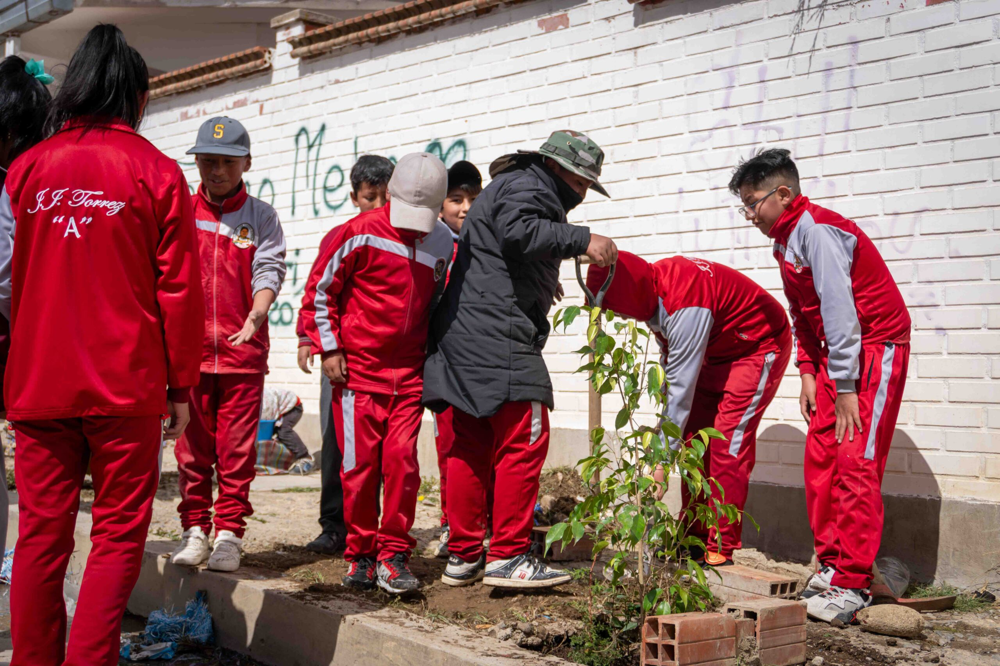

Turno Tarde
La Unidad Educativa Juan José Torrez Gonzales "A", turno tarde, es una institución comprometida con la formación integral de sus estudiantes, promoviendo el aprendizaje, la responsabilidad y los valores para contribuir al desarrollo de la sociedad.
Brindar una educación de calidad, fomentando el desarrollo académico, humano y social de nuestros estudiantes mediante una enseñanza basada en valores y respeto.
Ser una institución reconocida por su excelencia educativa, formando estudiantes responsables, críticos y comprometidos con su comunidad.
